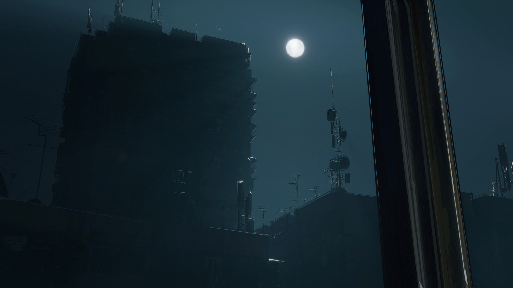
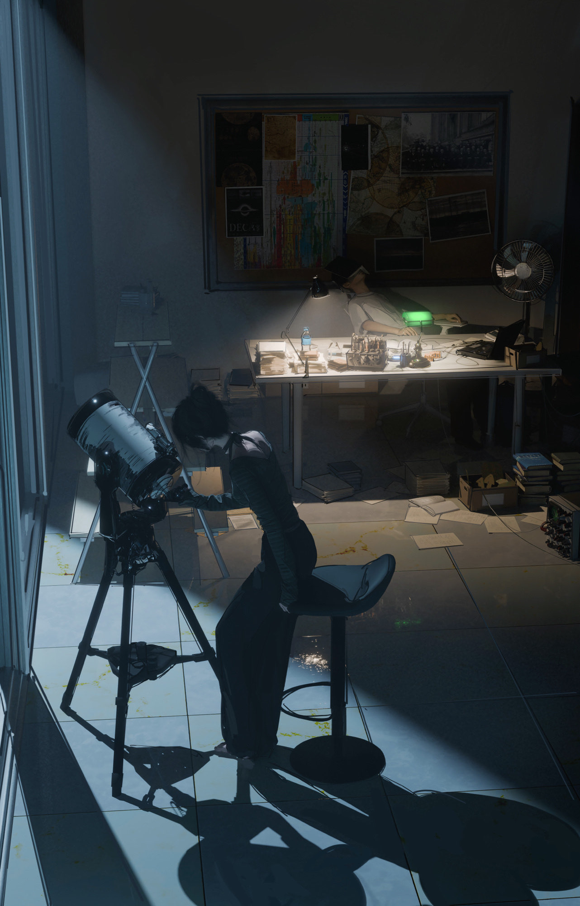
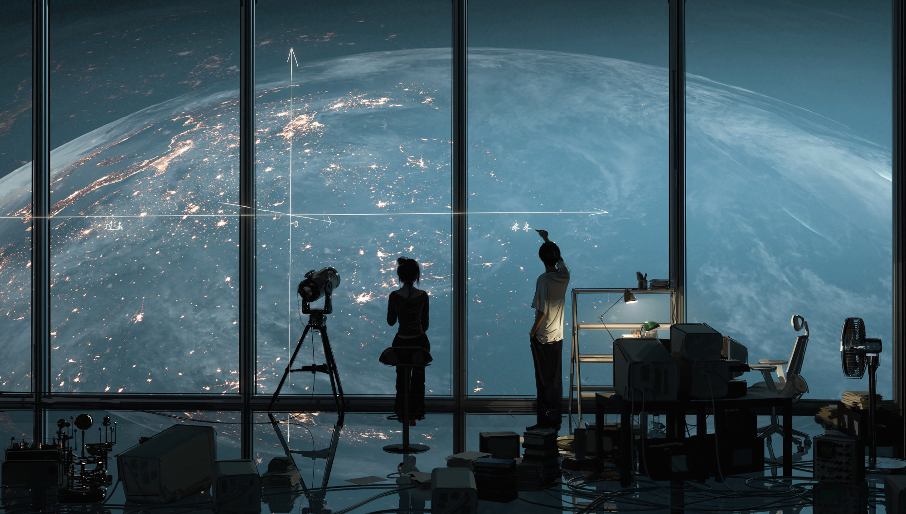
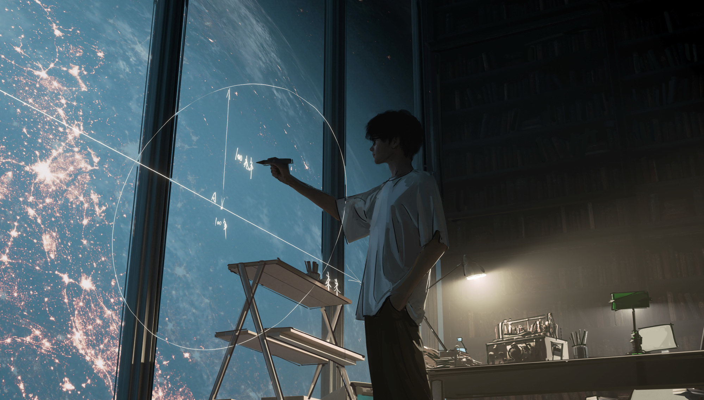
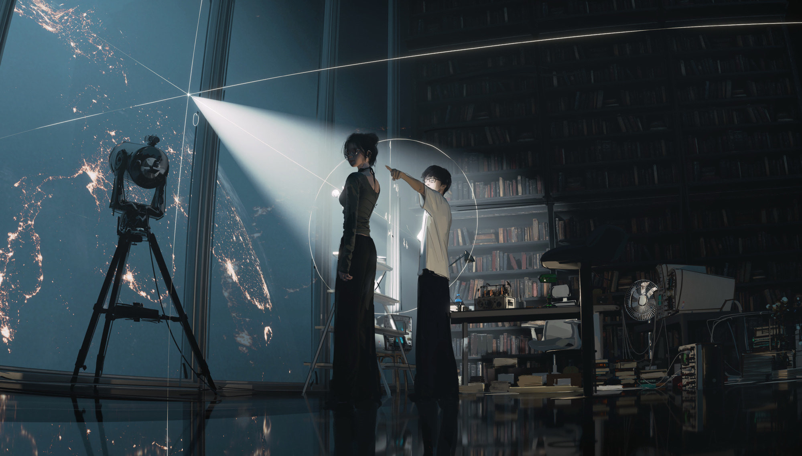
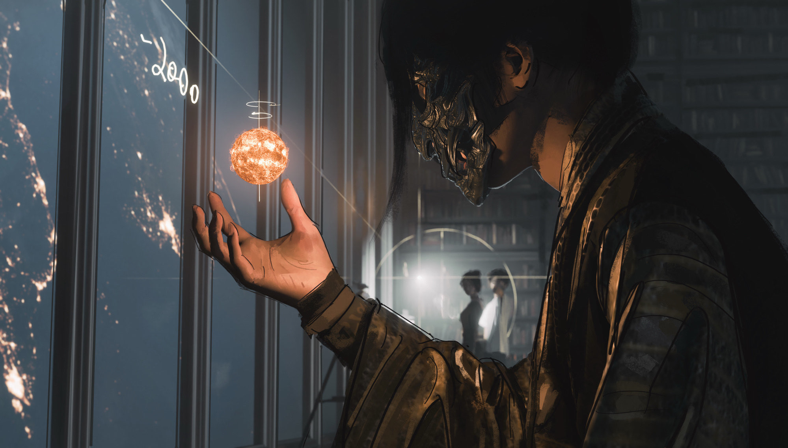
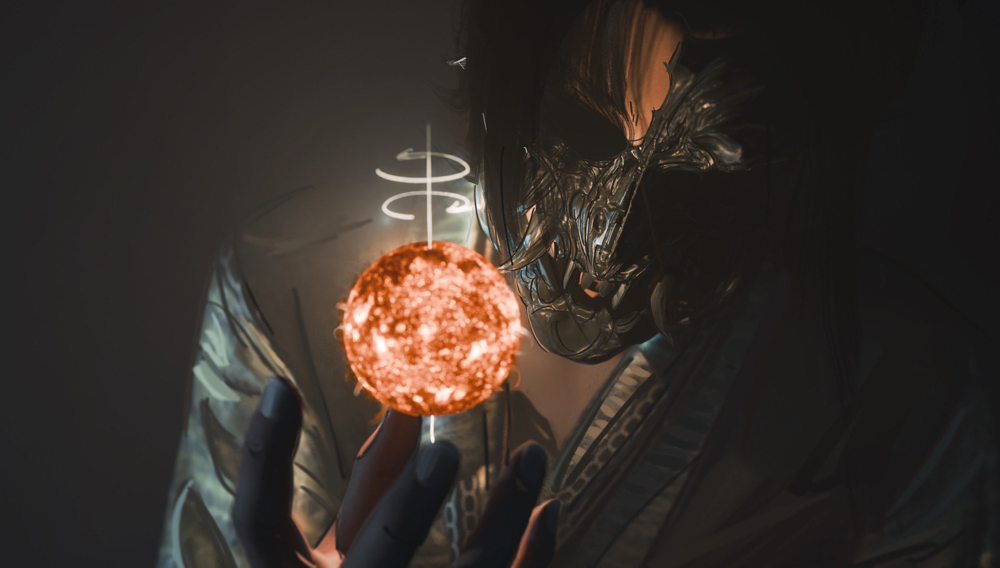
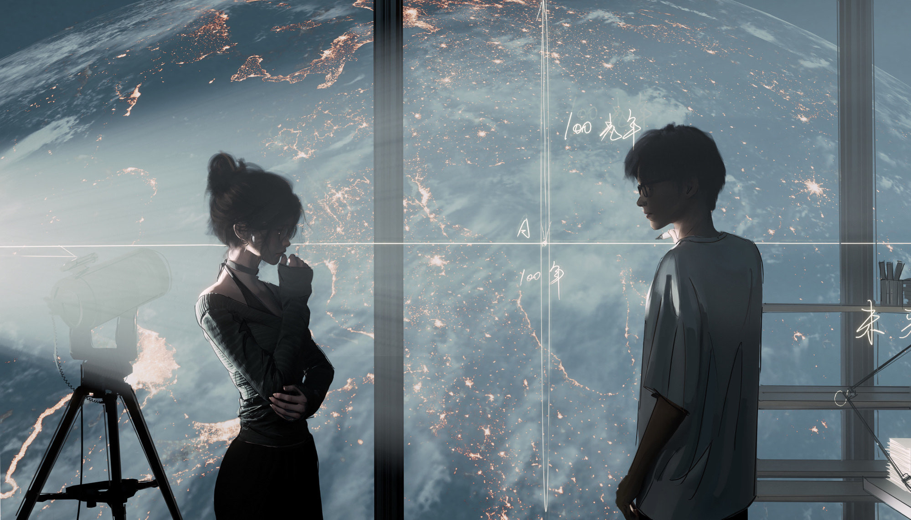

Đêm đã khuya lắm rồi.
Trong phòng chỉ còn bật một ngọn đèn nhỏ, ánh sáng vàng mờ rọi xuống góc bàn, phủ lên những trang sách mở rộng và đống giấy nháp chi chít phép tính. Ngoài khung cửa sổ sát đất, ánh đèn đô thị đã thưa thớt dần, xa xa thi thoảng có vài vệt xe cộ lướt qua trong câm lặng, chếch lên trên chỉ còn lại cả một bầu trời đen thẳm, vầng trăng treo lơ lửng trên cao, trắng bệch đến mức gần như vô tình lãnh đạm.

Hi Dương tựa lưng vào ghế, một cuốn sách úp ngược lên mặt, tựa hồ ban nãy đang đọc dở thì bị dòng suy nghĩ cuốn trôi đi mất. Trên bàn cậu trải la liệt mấy cuốn sách về lý thuyết trường, thuyết tương đối và các bản ghi quan trắc trường Vân Trùng, các trang giấy xếp dày đặc san sát nhau.
“Buổi diễn thuận lợi chứ?”

“Cũng tàm tạm, vẫn như mọi khi, khá là náo nhiệt.”
Nguyệt Nha Nhi vừa lơ đãng đáp lời, vừa táy máy chiếc kính thiên văn kia. Rõ ràng đây là lần đầu tiên cô chạm vào thứ đồ chơi này, cúi đầu nghiên cứu hồi lâu, trong từng cử động mang theo chút tò mò mới mẻ, lại phảng phất cả sự bướng bỉnh không chịu thua. Khung kim loại đã rỉ sét của kính thiên văn khẽ phát ra tiếng cọt kẹt, thị kính từ từ nâng cao lên, nhắm chuẩn vào vầng trăng sáng dị thường trên bầu trời đêm.

Hi Dương lật một góc cuốn sách đang che trên mặt lên, nghiêng đầu liếc nhìn cô một cái, mở lời:
“Khoan vội nhìn qua thị kính.”
Nguyệt Nha Nhi khựng lại, nhìn sang phía cậu.
Hi Dương giơ tay chỉ chỉ vào cạnh bên của kính thiên văn.
“Có thấy kính ngắm chấm đỏ ở bên cạnh không? Dùng cần gạt điều chỉnh từ từ trước, để chấm đỏ bên trong nhắm đúng vào điểm cậu muốn nhìn, rồi hẵng chỉnh kính chính, nếu không cậu rất khó định vị được đâu.”
Nguyệt Nha Nhi làm theo lời cậu, cúi đầu tìm kiếm, quả nhiên thấy một kính ngắm rất nhỏ ở bên hông. Cô bắt đầu thử theo hướng dẫn của cậu, khẽ nheo một bên mắt, đầu ngón tay bấm cần điều khiển, nhích từng chút từng chút một đổi hướng. Vầng trăng bên ngoài sáng đến kinh ngạc, chấm đỏ chậm rãi dịch chuyển trong bóng tối một hồi lâu, cuối cùng mới từ từ dừng lại ngay chính giữa mặt trăng.
Cô cúi người xuống, ghé sát mắt vào thị kính, ngay giây tiếp theo, liền buột miệng thốt lên một tiếng “oa” khe khẽ.

Mặt trăng bỗng chốc cận kề đến ngỡ ngàng, trắng lạnh, tĩnh lặng, đường viền khổng lồ nổi bật sắc lẹm trên nền trời đêm tăm tối. Những đường vân thô ráp trên bề mặt, bóng đổ của các miệng hố va chạm, các biển mặt trăng sâu thẳm, tất cả đều hiện lên rõ mồn một nơi đó, tĩnh mịch đến mức gần như trang nghiêm, tựa như một gương mặt cổ xưa và nhợt nhạt.
Nguyệt Nha Nhi cứ thế nhìn qua thị kính rất lâu, rồi mới khẽ hỏi:
“Có phải nó luôn chỉ quay mặt này về phía chúng ta không?”
Giọng Hi Dương từ phía sau truyền tới, bình thản và ngắn gọn:
“Đúng vậy. Bởi vì chu kỳ quay quanh quỹ đạo và chu kỳ tự quay của mặt trăng là như nhau, nó quay quanh Trái Đất một vòng thì bản thân nó cũng vừa vặn tự quay hết một vòng, thế nên mặt hướng về phía chúng ta mãi mãi là mặt này.”
Nguyệt Nha Nhi im lặng lắng nghe, tựa hồ đang nghiền ngẫm điều này trong đầu, rồi lại hỏi:
“Đây là sự trùng hợp ngẫu nhiên sao?”
“Cũng không hẳn là trùng hợp.”Hi Dương nói,“Về chuyện này có hai cách giải thích, xem em thích cách nào hơn.”
Nguyệt Nha Nhi hơi dời mắt khỏi thị kính một chút.
“Hai cách nào?”

“Cách thứ nhất,”Cậu xoay xoay cây bút trong tay trên mặt bàn, chậm rãi nói,
“Khi mặt trăng mới hình thành, chuyển động quay quanh quỹ đạo và tự quay vốn không đồng bộ. Nhưng trải qua khoảng thời gian đằng đẵng, Trái Đất đã tác dụng lực thủy triều lên nó, dần dần triệt tiêu đi độ chênh lệch của chuyển động tự quay, cuối cùng khóa chặt nó lại. Trạng thái này ngày nay chúng ta gọi là khóa thủy triều.”
Nguyệt Nha Nhi gật đầu, như đã hiểu ra, thuận miệng hỏi thêm một câu:
“Thế còn cách thứ hai?”
Hi Dương ngập ngừng một lát, mới nhàn nhạt nói:
“Cách thứ hai thì đơn giản hơn nhiều.”Ánh mắt Hi Dương dừng lại trên cây đàn bass màu trắng của cô,“Bởi vì mặt trăng không muốn để người khác nhìn thấy mặt còn lại của mình.”
Nguyệt Nha Nhi sững lại, lập tức hiểu ra ý vị sâu xa ẩn giấu bên trong câu nói.
Cô không tiếp lời câu nói đó, chỉ quay lại nhìn vầng trăng kia thêm một lúc, hồi lâu sau mới khẽ thốt lên:
“Hóa ra tận mắt ngắm nhìn mặt trăng thế này lại có cảm giác như vậy. Trước đây tôi chỉ thấy nó trong sách vở và trên màn hình, cứ ngỡ nó chỉ là một mảng trắng nhỏ xíu treo tít tắp trên trời cao. Bây giờ mới nhận ra, nó lớn hơn tôi tưởng tượng nhiều, và cũng sáng hơn nhiều.”

Cô ngừng lại một chút, rồi bồi thêm một câu rất khẽ:
“Thế nhưng thứ ánh sáng này cũng đâu phải của chính nó, là ánh sáng của mặt trời.”
Hi Dương khẽ gật đầu.
“Vậy giữa mặt trời và mặt trăng, cách nhau bao xa?”Nguyệt Nha Nhi dường như đang suy nghĩ điều gì, đột nhiên lại hỏi.
Hi Dương ngồi trên chiếc ghế cũ, nét mặt vẫn bình thản, chỉ là bên trong sự bình thản ấy, tựa như bỗng chốc lắng xuống một tầng cảm xúc sâu xa hơn.
Một lúc sau, cậu mới trầm giọng nói:
“Ánh sáng phải đi mất tám phút rưỡi.”
“Tám phút rưỡi? Nghe qua thì đâu có xa lắm.”
Hi Dương không đáp lời.
Khoảnh khắc ấy, Nguyệt Nha Nhi cảm thấy dường như cậu muốn nói điều gì đó, nhưng cuối cùng vẫn không nói ra miệng. Cô cũng không gặng hỏi tiếp, chỉ đưa mắt nhìn lại vầng trăng. Gió đêm len qua khe cửa sổ thổi vào chầm chậm, lay động tấm rèm vải màu xanh nhạt khẽ lay.
Yên lặng một hồi, cô bỗng nhiên lại hỏi:
“Tại sao hễ cứ nhắc đến khoảng cách, người ta lại luôn dùng ánh sáng để tính toán?”
“Bởi vì tốc độ ánh sáng là quy luật tầng sâu nhất của vũ trụ này.”Cậu nói,“Tốc độ giới hạn của mọi thông tin có trật tự đều là tốc độ ánh sáng. Chỉ cần em còn ở trong phạm vi quy luật này, thì không có bất cứ thứ gì có thể thực sự vượt qua nó để đến ngoài nón ánh sáng.”
“Ngoài nón ánh sáng?”
Nguyệt Nha Nhi vừa nghe thấy ba chữ “ngoài nón ánh sáng”, cả người liền lập tức cảnh giác lên.
“Trương Lương ngày hôm đó từng nói, chúng ta đang ở ngoài nón ánh sáng.”Cô nhìn cậu,“Rốt cuộc câu đó có ý nghĩa gì? Thế nào gọi là nón ánh sáng? Ngoài nón ánh sáng lại là nơi chốn thế nào?”

“Lại đây, tôi giải thích cho cậu.”
Hi Dương đã đứng dậy, cầm lấy cây bút trên bàn, bước tới trước khung cửa sổ sát đất, giơ tay vẽ một đường nằm ngang lên mặt kính, rồi lại vẽ thêm một đường thẳng đứng. Đầu bút miết qua mặt kính, phát ra tiếng ma sát thật khẽ.

Nguyệt Nha Nhi chẳng biết mò đâu ra một chiếc kính gọng tròn đeo lên mắt, ngồi lên chiếc ghế đẩu cao, ngẩng đầu nhìn cậu đầy vẻ nghiêm túc đứng đắn:
“Vậy thầy Hi Dương, bắt đầu tiết học vật lý của thầy đi nào.”
Hi Dương bị lời trêu chọc của cô làm cho có chút lúng túng luống cuống, chỉ đành quay đầu lại bấm bụng tiếp tục vẽ hai trục tọa độ kia lên mặt kính.
“Trục hoành này đại diện cho thời gian. Sang phải là tương lai, sang trái là quá khứ. Gốc tọa độ——chính là hiện tại.”
Nguyệt Nha Nhi đẩy đẩy gọng kính, nghiêm túc gật đầu:
“Hiểu rồi. Hiện tại, gốc tọa độ.”
“Trục tung cùng một trục khác mà hiện tại cậu chưa nhìn thấy, cùng nhau tạo thành không gian, tức là khoảng cách. Hệ trục tọa độ này, chính là tọa độ thời - không.”
“Được.”Nguyệt Nha Nhi nói,“Tọa độ thời - không.”

“Giả sử vị trí thời - không lúc em sinh ra là gốc tọa độ.”Hi Dương tiếp tục dịch sang bên phải, chấm một điểm trên trục thời gian,“Còn đây, là thời điểm một trăm năm sau trên trục thời gian, chúng ta gọi nó là điểm A. Sau đó lấy điểm A này làm tâm, vẽ một hình tròn có bán kính một trăm năm ánh sáng trên mặt phẳng không gian. Hình tròn này, chính là ranh giới trên lý thuyết mà em có thể chạm tới sau một trăm năm.”
Nguyệt Nha Nhi rất nhanh đã hiểu ra vấn đề.
“Bởi vì nhanh nhất cũng không thể vượt quá tốc độ ánh sáng, cho nên nếu là một trăm năm sau, trên lý thuyết xa nhất cũng chỉ có thể đến được nơi cách một trăm năm ánh sáng.”
“Đúng vậy.”Hi Dương nói,“Nối hình tròn này lại với gốc tọa độ, em xem nó giống hình gì?”

Nguyệt Nha Nhi nheo mắt nhìn một hồi.
“Một hình nón.”
“Đúng vậy.”Hi Dương nói,“Đây chính là nón ánh sáng thuộc về em. Mọi thông tin liên quan đến em đều chỉ có thể tồn tại bên trong phạm vi này. Bởi vì tất cả thông tin có trật tự đều không thể vượt quá vận tốc ánh sáng, cho nên chúng vĩnh viễn không thể đâm xuyên qua bức tường nón ánh sáng này. Sự tồn tại của em, ảnh hưởng của em, những nơi em có thể đặt chân tới, những điều em có thể cho người khác biết——đều bị giam cầm bên trong phạm vi này. Đối với bất kỳ điểm nào nằm ngoài nón ánh sáng, thông tin về em đều không thể truyền tới đó, vì thế dưới góc nhìn của nó, em hoàn toàn không tồn tại.”

Nguyệt Nha Nhi đứng dậy, vươn tay dò dẫm về phía trước, tựa như muốn chạm vào bức tường nón ánh sáng vô hình kia.
“Một chiếc lồng giam.”Cô khẽ lẩm bẩm.
Hi Dương không lên tiếng.
Cô chăm chú nhìn những ngón tay đang khẽ múa lượn của mình, tựa như nhìn thấy số phận đang chảy trôi qua từng kẽ tay, nhói buốt, lại lành lạnh tê dại.
“Một chiếc lồng giam hình nón, nhốt cả cuộc đời chúng ta bên trong. Chúng ta dành trọn cả kiếp người, cũng vĩnh viễn không bao giờ bước ra được bên ngoài nó.”

Bên ngoài cửa sổ sát đất, ánh trăng lạnh lẽo rọi lên mặt kính, những đường nét và con chữ vừa mới viết lên được ánh trăng soi rọi khẽ phát sáng, bóng hình nghiêng nghiêng đổ xuống, phủ lên người cả hai, tựa như một trật tự vô thanh đang giáng xuống trần gian.
Một lúc sau, cô như chợt ngộ ra điều gì, ngẩng đầu hỏi cậu:
“Nhưng vừa rồi cậu nói, giới hạn tốc độ của thông tin có trật tự là tốc độ ánh sáng. Vậy điều đó có nghĩa là, vẫn còn một thứ gọi là thông tin vô trật tự, có thể bứt phá khỏi vận tốc ánh sáng sao?”
Hi Dương cuối cùng cũng mỉm cười. Quả nhiên, với sự nhạy bén của cô, rất nhanh đã nắm bắt được manh mối này.
“Đúng vậy.”Cậu nói,“Thông tin vô trật tự.”
Nguyệt Nha Nhi nhìn chằm chằm vào cậu, ánh sáng trong đôi mắt dần dần bừng sáng.

“Trước tiên cậu có thể hiểu đơn giản thế này. Giả sử trong tay tôi có hai hạt cơ bản, chúng đều đang tự quay (spin), hơn nữa là xoay thuận và xoay nghịch hoàn toàn ngẫu nhiên, không có quy luật cố định nào. Sau đó thông qua một sự liên kết vật lý đặc biệt nào đó, chúng sẽ bước vào một trạng thái vô cùng kỳ lạ——bất kể cách nhau bao xa, biến đổi của chúng đều duy trì đồng bộ tức thời, một hạt xoay thế nào thì hạt kia cũng xoay y như vậy.”
Nguyệt Nha Nhi rất nhanh đã tiếp lời:
“Vướng víu lượng tử?”
“Đúng vậy.”Hi Dương gật đầu,“Em có thể hiểu nó như một mô hình vướng víu lượng tử đơn giản nhất.”

Cậu chỉ về phía bên trái của trục thời gian, như thể đang chỉ về một nơi chốn vô cùng xa xôi.
“Bây giờ, tôi đưa một trong hai hạt đó tới một nơi rất xa, rất xa. Đưa tới nơi cách xa một trăm triệu năm ánh sáng, hoặc là——”
Cậu khựng lại một nhịp.

“Đưa về hai nghìn năm trước, vào tận tay Trương Lương.”
Ánh mắt Nguyệt Nha Nhi khẽ thắt lại.
“Hai vị trí này, bất kể là trên phương diện không gian hay thời gian, đối với chúng ta hiện tại, đều là ngoài nón ánh sáng.

Thế nhưng nếu hai hạt này vẫn duy trì trạng thái vướng víu, khi Trương Lương nhìn thấy hạt trong tay mình xuất hiện chuỗi xoay thuận, xoay nghịch, xoay thuận, thì ông ấy sẽ biết hạt trong tay tôi, ngay vào khoảnh khắc này cũng xuất hiện một chuỗi y hệt như thế.”
“Nói cách khác,”Nguyệt Nha Nhi khẽ tiếp lời,“thông tin này đã truyền tới hai nghìn năm trước.”
“Đúng vậy.”Hi Dương nói,“Thông tin này đã vượt qua tốc độ ánh sáng, chạm tới ngoài nón ánh sáng.”

Nguyệt Nha Nhi nhíu mày:
“Tôi chỉ từng nghe nói đến vướng víu lượng tử trong không gian, chiều thời gian cũng có thể vướng víu được sao?”
“Đúng. Dựa vào thương số vướng víu trên bình diện toán học là có thể suy ra được, trên trục thời gian cũng tồn tại hiện tượng vướng víu.”
“Vậy chẳng phải có nghĩa là, trên lý thuyết dựa vào vướng víu lượng tử, chúng ta có thể liên lạc thời gian thực với nơi cách xa mấy năm ánh sáng, thậm chí truyền tải thông tin xuyên việt thời không?”
Hi Dương lắc đầu.
“Không thể.”
“Tại sao?”
“Ác quỷ nằm ở chính chỗ này. Bởi vì đó là một thông tin vô trật tự.”Hi Dương nói,“Tuy rằng nó đồng bộ, nhưng bản thân nó lại là ngẫu nhiên. Cả em lẫn Trương Lương đều không thể quyết định lần tiếp theo nó sẽ xoay thuận hay xoay nghịch. Chúng ta chỉ có thể nhìn thấy điều gì đã xảy ra, chứ không thể kiểm soát được điều gì sẽ xảy ra.”
Nguyệt Nha Nhi suy nghĩ một lát, lại gặng hỏi:
“Nếu như có một loại công nghệ có thể kiểm soát chiều quay của nó thì sao?”

Giọng của Hi Dương chậm lại.
“Nếu như bây giờ cậu vươn tay tóm lấy hạt này, cưỡng ép nó xoay theo cách cậu mong muốn. Nghịch, thuận, nghịch, nghịch——khắc một chuỗi có ý nghĩa vào bên trong, mượn nó để nói với Trương Lương: Tần Vương ngồi ở xe sau.”
Hơi thở của Nguyệt Nha Nhi khẽ nghẹn lại.
“Thế thì sẽ xảy ra chuyện gì?”
Hi Dương dừng đầu bút lại giữa hai điểm đó, khẽ gạch một đường, tựa như cắt đứt một sợi dây vốn dĩ vô hình.
“Thông tin này sẽ không còn là vô trật tự nữa. Mà một khi nó biến thành thông tin có trật tự và bị quan sát ngoài nón ánh sáng, sự vướng víu sẽ sụp đổ, mối liên kết giữa hai hạt này sẽ lập tức đứt gãy, không còn duy trì được sự đồng bộ nữa.”
“Cho nên, thông tin này vĩnh viễn không bao giờ có thể đến được tay Trương Lương.”
“Vĩnh viễn không thể.”
Hi Dương dừng lại một chút, dường như cố ý để lại cho cô một chút thời gian suy ngẫm.
“Cậu còn nhớ không, lần đầu tiên chúng ta gặp Công Tôn Ưởng, chúng ta bị dịch chuyển đi là vào lúc nào?”
Nguyệt Nha Nhi theo lời cậu nhớ lại một hồi, chậm rãi nói:
“Là vào lúc tôi gọi ông ấy là Thương Ưởng.”
“Đúng vậy.”Hi Dương nói,“Bởi vì vào thời điểm đó, ông ấy vẫn chưa phải là Thương Ưởng, mà chỉ là Công Tôn Ưởng. Phải đến sau này biến pháp thành công, được phong đất ở đất Thương, ông ấy mới có cái tên ‘Thương Ưởng’. Một câu nói đó của em, đối với ông ấy chính là một thông tin có trật tự đến từ hậu thế. Đó đã không còn là cuộc trò chuyện thông thường nữa, mà là đang làm thay đổi nhận thức của ông ấy về số phận của chính mình. Loại thông tin như thế một khi thốt ra, thông đạo sẽ lập tức bị gián đoạn.”

Cô chỉ lặng nhìn những đường nét trên mặt kính, cảm thấy sau lưng từ từ dâng lên một luồng ớn lạnh. Tựa như rất nhiều mảnh vụn vốn dĩ tản mác, cho đến tận giây phút này, cuối cùng mới khớp chặt vào nhau.
“Hèn chi lúc đó tôi muốn nói cho Trương Lương biết Tần Vương ngồi ở xe nào, cậu liền lập tức ngắt lời tôi. Cậu không phải sợ tôi làm thay đổi lịch sử, mà là——”
Đột nhiên, Nguyệt Nha Nhi như sực nhớ ra điều gì, cả người bật nảy dậy.
“Hèn chi……”
Hi Dương ngước mắt lên.
“Sao thế?”
Nguyệt Nha Nhi nhìn cậu, vẻ mặt từng chút từng chút trở nên phức tạp.
“Hèn chi…… Hán Quang Vũ Đế——”

Hi Dương ngẩn người ra một thoáng.
“Hán Quang Vũ Đế?”
Nguyệt Nha Nhi không giải thích ngay, chỉ nhíu chặt mày, tựa như đang chắp vá lại trong đầu một đoạn ký ức rất xưa cũ, rất xa xôi, vốn dĩ bấy lâu nay vẫn bị cô coi là ảo giác.
“Trước đây…… dường như tôi cũng từng gặp một lần.”
Nét mặt Hi Dương trở nên nghiêm trọng hiếm thấy.
“Vào khi nào?”
“Ở Tây Tạng.”Nguyệt Nha Nhi trầm giọng nói,“Lần đó tôi đi đuổi theo Vân Trùng Bàn Cổ.”
Cô ngập ngừng, như đang hồi tưởng lại bầu không khí và ngọn gió nơi vùng cao nguyên ấy.
“Lúc đó tôi vẫn luôn nghĩ là do say độ cao, hoặc do thiếu oxy, cứ ngỡ mình chỉ vừa trải qua một giấc mơ rất dài và kỳ quái.”

Bàn tay Hi Dương khựng lại giữa không trung, ánh mắt gắt gao dừng lại trên gương mặt cô.
“Cậu đã nhìn thấy ai?”
Nguyệt Nha Nhi im lặng một hồi.
Vầng trăng ngoài cửa sổ vẫn treo lơ lửng nơi đó, tĩnh mịch và nhợt nhạt. Cô cúi đầu, dường như cuối cùng cũng chạm tới cái tên đó từ nơi sâu thẳm của ký ức.
“Hạng Vũ.”
Cô nói xong liền ngước mắt lên nhìn Hi Dương, ánh mắt sâu thẳm, tựa như vẫn còn đang nén lại một cái tên khác chưa kịp nói ra miệng.